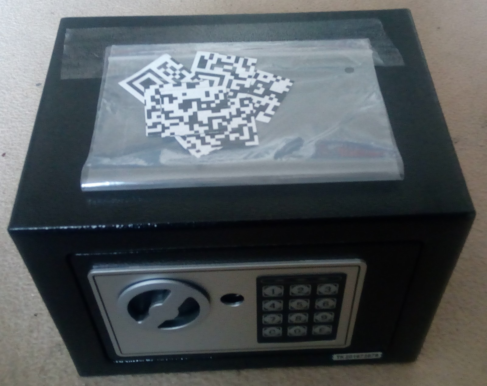
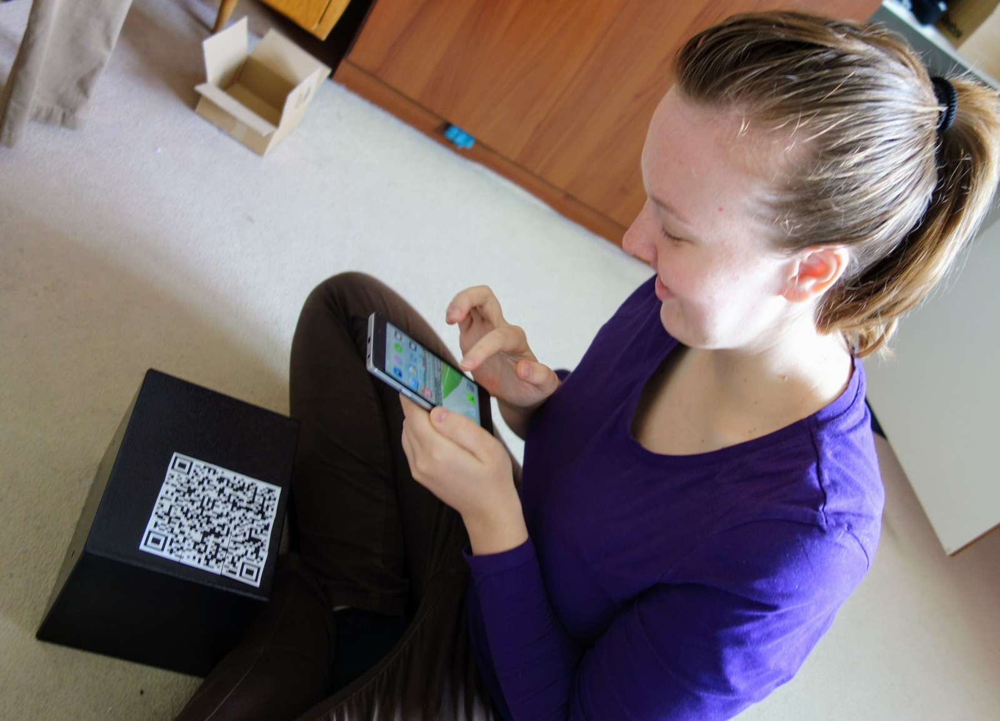
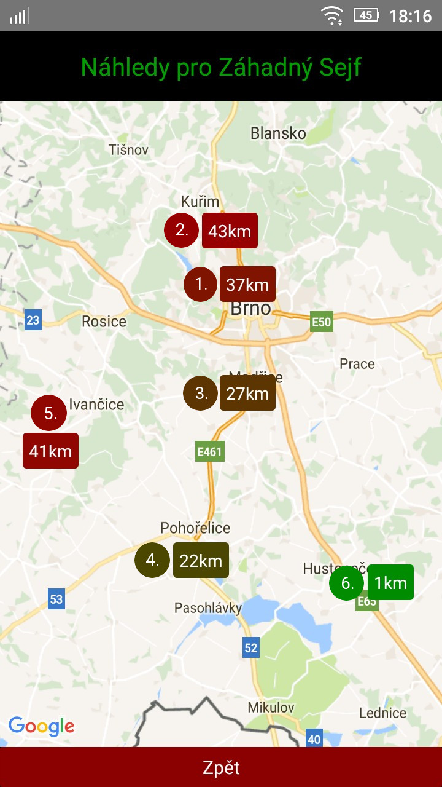
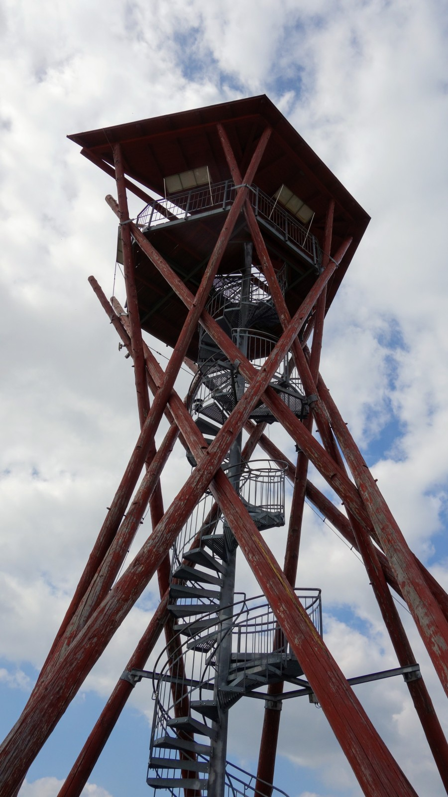
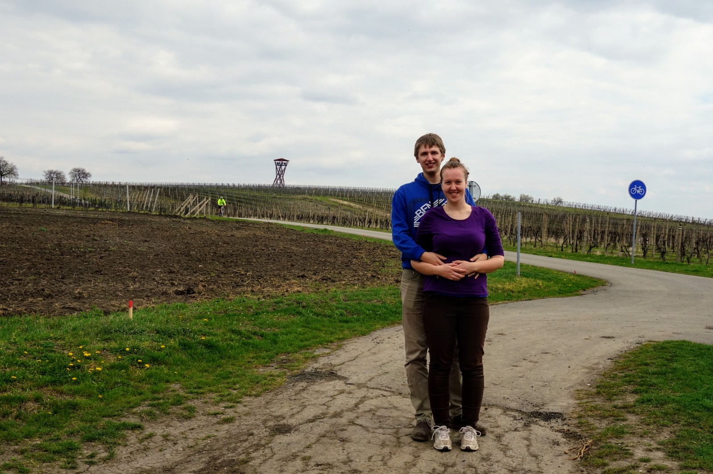

Cože?
Ano, je to tak!
Ivana Králová, bytem Pekařská 118 Opava, a Jonáš Trantina, bytem Masarykova tř. 16 Opava, vstoupí do svazku manželského.
Kdy se to stalo?
Poprvé jsme se spatřili na Mendelově Gymnáziu 3.9.2007, v první školní den. Střední utekla jako voda a do čtvrťáku už jsme šli spolu ruku v ruce. Na vysokou školu do Brna jsme už mířili jako partneři, připraveni podstoupit první z nikdy nekončících testů vztahu - společné bydlení.
Vysokou školu jsme přežili ve zdraví a i přes spoustu stresu a problémů jsme vždy drželi při sobě. Po škole, kdy už jsme spolu byli pěknou řádku let a bylo jasné, že se na tom nic nezmění, jsem začal přemýšlet o tom, jak Ivu požádat o ruku.
Jak se to stalo?
Jeho pohled
Hned od začátku mi bylo jasné, že musí být žádání o ruku střižené na míru přímo Ivě, většina přehnaně romantických variant tedy nepřipadala v úvahu. Musela to být akce a vzrušení, a trochu i soutěž. A tak, 9.4.2017, dostala Iva sejf a instrukce jak ho otevřít.
Sejf, jež k otevření požadoval číselný kód, a pár papírků bylo vše, co Iva v
onen osudný den dostala.

První krokem bylo složení celkem 9
čtvercových papírků do velkého QR kódu. Úkol to nebyl jednoduchý, neboť
manipulace s malými papírky byla obtížná a i když našla správné uspořádání
jednotlivých částí, musela je perfektně poskládat, aby přesně lícovali, jinak
je čtečka v mobilu nebyla schopna přečíst.
 Věděl jsem, že je možné dílky složit, ale měl jsem trochu obavy, že zvítězí její
býčí povaha a že se na to vykašle. Zvědavost byla ale silnější.
Věděl jsem, že je možné dílky složit, ale měl jsem trochu obavy, že zvítězí její
býčí povaha a že se na to vykašle. Zvědavost byla ale silnější.
Když nakonec QR kód mobilem načetla, dostala se k mobilní aplikaci, která zajišťovala hlavní náplň dne. Hlavním cílem bylo najít místo neznámo kde. Jedinou indicií byla aplikace, pomocí které mohla celkem 8x zjistit jak daleko se od místa nachází. Žádné další instrukce či nápovědy nebyly k dispozici.
8 pokusů se může zdát jako hodně, ale najít takhle místo vzdálené přes 30km není jednoduché, byť jsem měl samozřejmě otestováno, že to není nerealistické. Když ale Iva 5. pokusem zamířila zcela špatným směrem, začal jsem mít obavy. Nakonec se ale vše v dobré zvrátilo a 6. pokusem se trefila přesně do cíle.
Cílem byla rozhledna Slunečná, v srdci jižní Moravy, zcela obklopená vinnou révou. Na místě už jen stačilo najít kód a otevřít sejf, který nám celou dobu připomínal, že tohle není jen obyčejný nedělní výlet. V sejfu se už skrýval, v několika metrech bublinkové fólie, zásnubní prsten, a po nefalšovaném překvapení řekla ono kýžené Ano.
Její pohled
Ráno, toho osudného dne, jsem věděla, že pojedeme na výlet. Věděla jsem přesně kam, měla jsem naplánovanou cestu směrem na Kuřim a okolí (v plánu byly samozřejmě kešky) a měli jsme tam jet vláčkem.
 Mezitím, co já ráno chystala malou svačinku, Jonáš šel ještě něco vyřídit. Když se vrátil držel v ruce malou divnou černou skříňku. Byl to trezor. Podal mi ho a nechtěl mi k němu vůbec nic říct. Má zvědavost, co se v trezoru ukrývá, stoupla na 100%, když jsem spatřila mini QR kódy v sáčku držícím na trezoru. Jakmile jsem sáček otevřela bylo mi jasné, že ty kousky musím složit dohromady. Tento úkol nebyl vůbec jednoduchý. Muselo to bý namilimetr přesně!  Po zdolání tohoto úkolu se mi v mobilu otevřela aplikace s názvem THE GAME kde stálo, že mám 8 pokusů k nalezení klíče pro trezor. 8? 8??? Není to málo? Co když to nedám na 8?! Bude nějáká nápověda? Jak na to? … bylo to marné, Jonáš mi na žádnou otázku neřekl nic konkrétního. Jen mi ukázal, že má v ruce klíče od auta a řekl, že řídím, že si ten kód k odemčení musím najít sama. Když jsem spustila hru byli jsme ještě doma na Kounicove 21 a já byla 37km od kýženého cíle. Vzhledem k tomu, že jsem byla připravena na to, že jedem na výlet na Kuřim, zamířila jsem směrem na sever a zastavila jsem až na kraji Brna v místech kde jsem dříve chodila do školy. Zde jsem vyzkoušela svůj druhý pokus a bohužel jsem byla 43km daleko od cíle – nabrala jsem tedy špatný směr. Otočila jsem to tedy na jih přes celé město. Nebylo vůbec jednoduché odhadnout kolik km jsem už vlastně ujela, neměla jsem k dispozici mapu s měřítkem. Nicméně dvěma následujícími pokusy jsem se dostala na 22 km. Mapa a vzdálenosti mi pak naznačovaly, že dál na jih nemá smysl jezdit. Musím zvolit východ nebo západ.
Zvolila jsem západ a bylo to špatné rozhodnutí. Navíc jsem se bála použít další pokus a tak jsem jela skoro 20 km špatným směrem. Při 5 pokusu jsem se vzdálila na 41km od cíle a Jonáš vypadal dooooost nervózně. Bodejď by ne, dal si s tím takovou práci a já se vzdaluju a vzdaluju. I já začala být značně nervózní. Vždyť už mi zbývají jen 3 pokusy!!! Pořádně jsem se podívala na mapu a zapíchla prst do Velkých Pavlovic. Po cestě jsem měla několik momentů, zda ještě nezastavit a neupřesnit si směr, či zda se alespoň přibližuju, ale bylo by to zbytečné, Pavlovice totiž byly přesně to místo, kam jsme jeli. Vyskočilo na mě GRATULUJI, kód najdeš na blízké rozhledně. Kód jsem dle instrukcí zadala do trezoru. V trezoru bylo cosi obalené ve velkém kusu bublinkové fólie. To cosi byl prsten a já řekla Ano.
 
{kind=link}
{kind=link}
{kind=link}
{kind=link}
{kind=link}
{kind=link}
{kind=link}
{kind=link}
{kind=link}
{kind=link}
{kind=link}
{kind=link}
{kind=link}